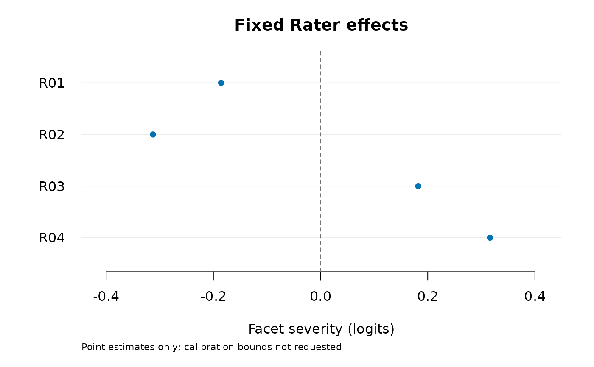

Fit a rating-scale model with dependence within Person-specific testlets
Source:R/api-testlet.R
fit_mfrm_testlet.RdAccount for extra dependence among ratings of the same person, for example
several rubric criteria from one performance. A testlet identifies the
ratings sharing this local effect within that person. The rating-scale
model (RSM) estimates fixed facets, normal ability variance and one common
local variance. For a rater effect shared across people instead, see
fit_mfrm_random_rater().
Usage
fit_mfrm_testlet(
data,
person,
score,
testlet,
facets = character(),
score_levels,
testlet_variance = NULL,
quad_points = 31L,
maxit = 300L,
variance_max = 16,
missing = c("fail", "omit"),
person_sd = NULL,
person_variance_max = 16
)
# S3 method for class 'mfrm_testlet'
summary(object, ..., calibration_intervals = c("none", "normal"), level = 0.95)
# S3 method for class 'mfrm_testlet'
print(x, ...)Arguments
- data
Long-format ratings; each row is one assigned rating.
- person, score, testlet
Column names.
testletidentifies a group within a Person and may also occur infacets, for example a fixed Rater effect.- facets
Fixed-facet column names; default none. A column used as
testletis not automatically a fixed facet. For example,testlet = "Task"models local dependence; also specifyfacets = "Task"if the model should estimate fixed task difficulties.- score_levels
Consecutive integer categories in increasing order.
- testlet_variance
NULLestimates the common local variance. A nonnegative number fixes it as known; zero removes local dependence.- quad_points
Standard-normal quadrature order for both integrals, from 7 to 121; default 31. Results are checked at
2 * quad_points + 1.- maxit
Maximum iterations per optimization start; default 300.
- variance_max
Upper search bound for an estimated variance; default 16. A fit reaching this bound is not numerically ready.
- missing
"fail"(default) refuses missing assigned scores;"omit"analyzes observed rows and records the omissions.- person_sd
NULL(default) estimates the SD of a mean-zero normal ability population. A positive number fixes the SD as known. Use1to reproduce the earlier fixed N(0,1) model; this is a population assumption, not merely a choice of units.- person_variance_max
Upper search bound for estimated ability variance (not SD); default 16. Reaching it withholds numerical readiness.
- object, x
An
mfrm_testletresult.- ...
Unused.
- calibration_intervals
For summaries,
"none"(default) omits calibration bounds;"normal"explicitly requests their pointwise normal approximation. Person scoring remains a separate conditional output.- level
Nominal level for explicitly requested summary calibration intervals; default 0.95. Numerical and variance-boundary restrictions remain.
Value
An mfrm_testlet object with calibration, covariance, calibration
table, checks, all optimization runs, input/omission accounting and settings.
It contains no native pointers; use saveRDS() and readRDS().
Details
The adjacent-category logit is $$\log\{P(Y_{pbi}=k)/P(Y_{pbi}=k-1)\} = \theta_p + \gamma_{pb} - x_{pbi}'\beta - \delta_k.$$ Abilities are independent N(0,\(\sigma_p^2\)). Local effects are independent N(0,v), independent of abilities and assignment. A label reused by another Person represents a new local effect, not a shared random rater. Every row has one non-overlapping membership. Fixed-facet effects sum to zero; free steps determine overall location. There are no calibration priors.
Frequentist MML uses nested one-dimensional Gaussian quadrature: integrate each local effect conditional on ability, multiply its block likelihoods, then integrate ability. Unequal block sizes and incomplete assignments are supported. At least two Persons must have multiple observed testlets and at least two Persons must have a testlet with repeated ratings. These initial design requirements do not prove estimability. Unit weights, RSM, additive fixed facets and one common variance are the supported scope; overlapping memberships, PCM, correlated effects, random rater effects shared across Persons, covariate-dependent ability means and nonnormal ability populations are not included. Estimating one ability variance does not establish homogeneous populations across assignment groups.
Zero is evaluated explicitly for both estimated variances using their
one-sided variance scores, including the joint-zero submodel. All
optimization starts are retained. Fixed coordinates are searched within
[-20,20]; reaching a bound withholds readiness. Integration differences,
the projected gradient and information are separate checks.
A converged start is preferred when its objective differs from the best
failed start only within floating-point rounding precision.
Increasing quadrature order may be necessary; no order is universally
sufficient.
Calibration tables retain estimates and approximate SEs but omit bounds
by default. confint(fit, parm = "calibration", level = 0.95) or
summary(fit, calibration_intervals = "normal", level = 0.95) explicitly
requests observed-information normal approximations. Their finite-sample
coverage is not established. Numerical/information failures and estimated
variance boundaries retain missing bounds. A regular variance interval is
not supplied. Rebuilding summaries or mfrm_results() from older saved
fits applies this policy without refitting or changing the source fit.
If estimated ability variance is zero, Person scoring returns unavailable
rows rather than degenerate zero-width intervals. Positive information for
the remaining fixed coordinates does not resolve variance-boundary inference.
predict.mfrm_testlet() supplies conditional Person scores and continuous
equal-tail intervals; these exclude calibration-estimation uncertainty.
Numerical agreement does not establish coverage or model fit.
Model assumptions and related research
Wang and Wilson's Rasch testlet model (2005) motivates dependence within
a Person-specific block. With testlet = "Rater" and a fixed Rater facet,
the more direct reference is their random-effects facet model (2005,
equations 14–15): usual rater severity is distinct from an effect shared
only within a Person/rater pair. Here the local variance is common to all
testlets; it cannot rank raters by individual inconsistency.
Both papers allow ability variance to be estimated. This function estimates one normal ability variance by default while fixing its mean at zero and keeping free step location. This avoids adding a second location parameter. Unlike models with separate local variances, it retains a common testlet variance. The cited results do not guarantee coverage for a new assessment design or for this implementation.
Comparison with ordinary MFRM
Hold the observed events, categories, fixed facets, omissions and ability
population constant. A known testlet_variance = 0 removes local
dependence while retaining the fixed Rater facet, if supplied. The
corresponding ordinary model is an RSM MML with a matching normal
population and location convention. For person_sd = 1 this is the
fixed N(0,1) model; estimated-population comparisons must also align location
constraints rather than compare raw coefficients. An estimated zero
variance lies on a boundary; ordinary
chi-squared likelihood-ratio calibration cannot be assumed.
compare_mfrm() checks matched events and compares centered facet effects
with an ordinary RSM MML fit; it does not provide automatic ranking. Descriptive
score or interval changes do not establish which model is better.
Assessment applications
With testlet = "Task", the local effect is shared by a Person's ratings
on that task. vignette("mfrmr-testlet-applications") provides runnable
examples of allocating a fixed rating budget across tasks and comparing
score sensitivity when tasks have unequal numbers of criteria. Its small
enumeration reports model-conditional posterior precision and marginal EAP
reliability while holding fitted calibration fixed; it is not a general
design optimizer, a G/D study or a coverage guarantee. Ordinary MFRM does
not generally assign equal information to arbitrary added criteria or tasks.
A common local variance cannot identify halo, establish that criteria are indistinguishable, or rank tasks by dependence. Task-specific variances are not estimated by this API. Fitting tasks separately does not remedy this: with one local block per Person, ability and local variances are confounded. Unequal block sizes are handled through the likelihood, not by imposing equal task weights or removing every source of bias. Assignment, content and the origin of dependence require substantive review.
Earlier saved results
Saved fits without an ability-variance parameter retain their original
N(0,1) interpretation when scored or reported. Refitting now estimates
ability variance unless person_sd = 1 is supplied. Reprinting or
rescoring does not refit a population. Save a new fit and regenerate its
scores together when changing the population assumption.
References
Wang, W.-C. and Wilson, M. (2005). The Rasch testlet model. Applied Psychological Measurement, 29, 126–149. doi:10.1177/0146621604271053 .
Wang, W.-C. and Wilson, M. (2005). Exploring local item dependence using a random-effects facet model. Applied Psychological Measurement, 29, 296–318. doi:10.1177/0146621605276281 .
See also
predict.mfrm_testlet(), plot.mfrm_testlet(), mfrm_results(),
mfrm_response_diagnostics() for descriptive posterior predictive residuals.
Examples
# Saved fit for the synthetic example_core ratings.
example <- readRDS(system.file("examples", "extended-models.rds", package = "mfrmr"))
fit <- example$testlet$fit
# To refit instead (this takes longer than inspecting the saved result):
# ratings <- load_mfrmr_data("example_core")
# fit <- fit_mfrm_testlet(ratings, "Person", "Score", "Rater",
# facets = c("Rater", "Criterion"), score_levels = 1:4, quad_points = 121)
fit$checks
#> $LogLikDifference
#> [1] 4.69413e-10
#>
#> $GradientDifference
#> [1] 2.796458e-08
#>
#> $MomentDifference
#> [1] 2.454623e-09
#>
#> $MaxProjectedGradient
#> [1] 4.306714e-06
#>
#> $VarianceScore
#> [1] 2.006723e-06
#>
#> $PersonVarianceScore
#> [1] 1.741695e-06
#>
#> $Convergence
#> [1] 0
#>
#> $SearchBoundary
#> [1] FALSE
#>
#> $EstimatedVarianceBoundary
#> [1] FALSE
#>
#> $EstimatedPersonVarianceBoundary
#> [1] FALSE
#>
#> $NumericalReady
#> [1] TRUE
#>
#> $InformationPositive
#> [1] TRUE
#>
#> $MinInformationEigenvalue
#> [1] 14.35578
#>
plot(fit, facet = "Rater")

# The complete regeneration recipe is included with the package:
system.file("examples", "extended-models.R", package = "mfrmr")
#> [1] "/home/runner/work/_temp/Library/mfrmr/examples/extended-models.R"